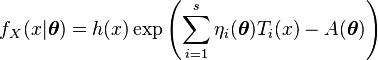
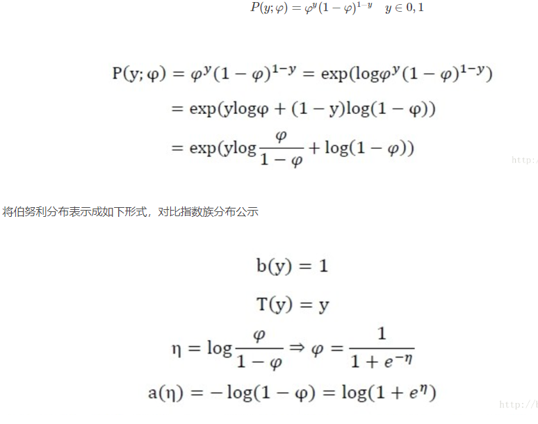

【機械学習】共役事前分布
简介
可以用来推断模型参数
对于伯努利分布、二项分布。其共轭先验分布式 Beta分布 (详情见BETA分布文章)
高斯分布的共轭先验分布
方差已知，均值未知->高斯分布
其未知参数$\mu$的共轭事前分布是 ，也是一个高斯分布
如何估计模型参数?
我们现在有观测集合D。要推断$\mu$
从$p(\mu|D)$出发
有
因为$p(\mu)$服从$N(\mu|\mu_0,\sigma_0)$,因此有$p(\mu)\propto exp\{\frac{1}{2\sigma_0^2}(\mu-\mu_0)^2\}$
因此能得到上式
之后
注意到 对于 $exp\{ {-\frac{(\mu-\mu_N)^2}{2\sigma_N^2} }\}$
$\mu$的一次项系数是$\frac{\mu_N}{\sigma_N^2}$,二次系数是$\frac{-1}{2\sigma_N^2}$
于是即可根据上式子求出$\mu_N$和$\sigma_N^2$(事后分布的参数)
方差已知的多维分布
也一样。记住多维正态分布
指数的部分是一个二次型。
平均已知，方差未知
此时的共轭事前分布是逆Gammr分布
$p(\lambda|a,b)=\frac{1}{\Gamma(a)}b^a\lambda^{a-1}exp(-b\lambda)$
其次$p(x_n|\lambda)$是高斯分布$N(x_n|\mu,\lambda^{-1})$
之后也是$p(\lambda|D)\propto p(D|\lambda)p(\lambda|a_0,b_0)$
共轭事前分布乘上$p(\lambda|D)$
然后与gamma分布比较，得出两个参数a_N b_N
多维下
需要使用高维gamma分布
平均，方差都未知
此时 $p(\mu|\lambda)\sim N(\mu|\mu_0,\lambda^{-1})$
$p(\lambda)$是$Gam(\lambda|a,b)$
指数分布族以及参数推断
伯努利分布
多项式分布
泊松分布
伽马分布
Beta分布
Dirichlet分布
Wishart分布(高维的gamma)
高斯分布
都是指数分布族
指数分布族的一般形式
T(y)是一个充分统计量，一般其=y
$\eta$是分布的自然参数
于是3个参数a,b,$\eta$可以确定一个指数分布族
或者
例子：
